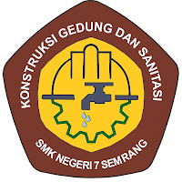
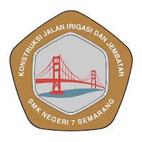
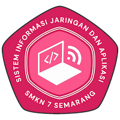
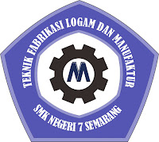
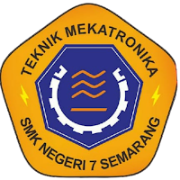
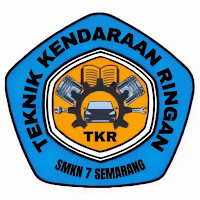
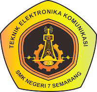
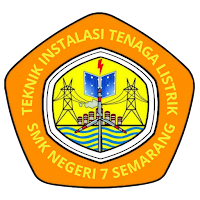

Daftar Jurusan
| No | Logo Jurusan | Program Keahlian | Konsentrasi Keahlian | Masa Studi |
|---|---|---|---|---|
| 1 |  |
Teknik Konstruksi dan Perumahan | Konstruksi Gedung, Sanitasi, dan Perawatan | 4 Tahun |
| 2 |  |
Konstruksi dan Perawatan Bangunan Sipil | Konstruksi Jalan, Irigasi, dan Jembatan | 4 Tahun |
| 3 |  |
Pengembangan Perangkat Lunak dan Gim/td> | Sistem Informasi, Jaringan, dan Aplikasi | 4 Tahun |
| 4 |  |
Teknik Pengelasan dan Fabrikasi Logam | Teknik Fabrikasi Logam dan Manufaktur | 4 Tahun |
| 5 |  |
Teknik Elektronika | Teknik Mekatronika | 3 Tahun |
| 6 |  |
Teknik Otomotif | Teknik Kendaraan Ringan | 3 Tahun |
| 7 |  |
Teknik Elektronika | Teknik Elektronika Komunikasi | 3 Tahun |
| 8 |  |
Teknik Ketenagalistrikan | Teknik Instalasi Tenaga Listrik | 3 Tahun |